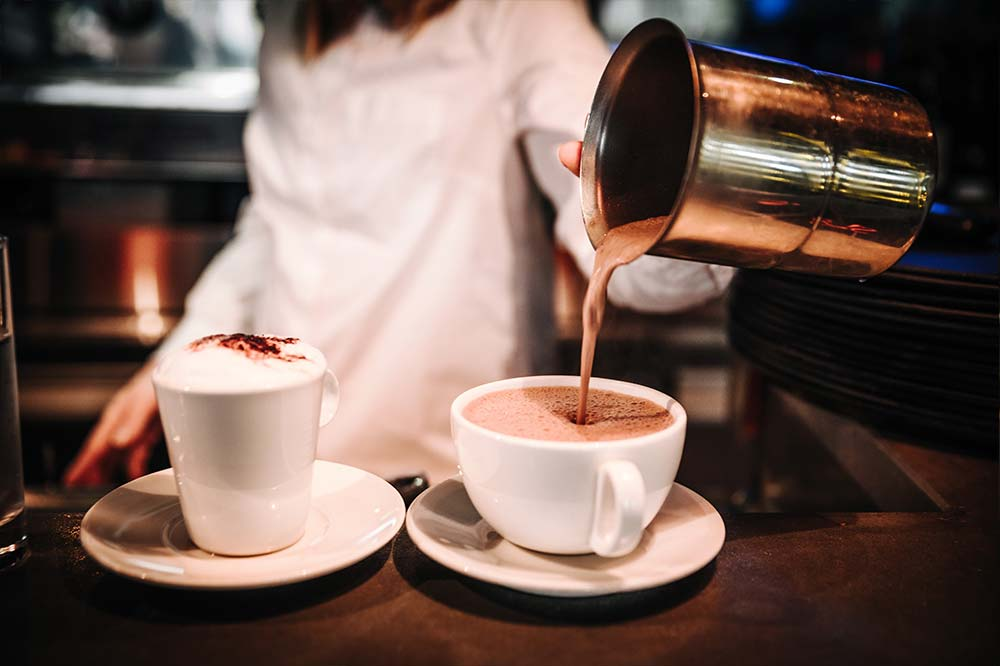

Le restaurant
C’est à quelques pas du Bois de Boulogne et de la Porte Maillot que se situe ce bistrot aux couleurs sobres et distinguées.
Véritable institution de la ville de Puteaux, le Saperlipopette est conçu comme un bistrot chic mariant différents styles : objets chinés, vieux livres, matières confortables, sans oublier cet escalier en acier dès l’entrée, le tout dans une atmosphère conviviale et chaleureuse.
Et saperlipopette, j’oubliais ! La terrasse ensoleillée vaut le détour toute l’année.
